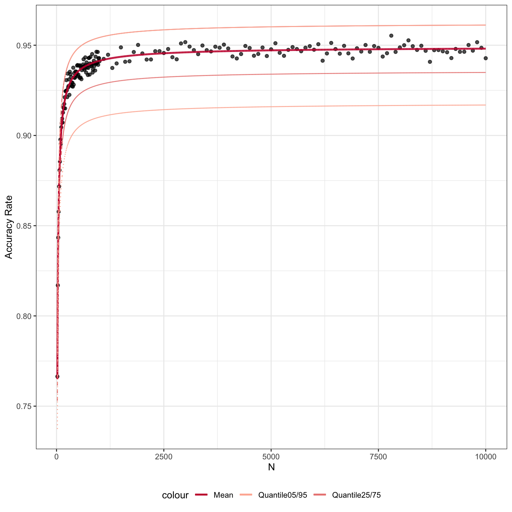

scClassify.Rmdlibrary(scdney)data("scClassify_example")
xin_cellTypes <- scClassify_example$xin_cellTypes
exprsMat_xin_subset <- scClassify_example$exprsMat_xin_subset
wang_cellTypes <- scClassify_example$wang_cellTypes
exprsMat_wang_subset <- scClassify_example$exprsMat_wang_subsetcat("Cell type composition of Xin et al. data")
#> Cell type composition of Xin et al. data
table(xin_cellTypes)
#> xin_cellTypes
#> alpha beta delta gamma
#> 285 261 49 79
cat("Cell type composition of Wang et al. data")
#> Cell type composition of Wang et al. data
table(wang_cellTypes)
#> wang_cellTypes
#> acinar alpha beta delta ductal gamma stellate
#> 5 206 118 10 96 21 45scClassify_res <- scClassify(exprsMat_train = as.matrix(exprsMat_xin_subset),
cellTypes_train = xin_cellTypes,
exprsMat_test = list(wang = as.matrix(exprsMat_wang_subset)),
cellTypes_test = list(wang = wang_cellTypes),
tree = "HOPACH",
algorithm = "WKNN",
selectFeatures = c("limma"),
similarity = c("pearson"),
weighted_ensemble = TRUE,
verbose = FALSE)
#> after filtering not expressed genes
#> [1] 980 674table(scClassify_res$testRes$wang$pearson_WKNN_limma$predRes, wang_cellTypes)
#> wang_cellTypes
#> acinar alpha beta delta ductal gamma stellate
#> alpha 0 206 0 0 0 2 0
#> beta 0 0 118 0 1 0 0
#> beta_delta_gamma 0 0 0 0 20 0 0
#> delta 0 0 0 10 0 0 0
#> gamma 0 0 0 0 0 19 0
#> unassigned 5 0 0 0 75 0 45scClassify_res_ensemble <- scClassify(exprsMat_train = as.matrix(exprsMat_xin_subset),
cellTypes_train = xin_cellTypes,
exprsMat_test = list(wang = as.matrix(exprsMat_wang_subset)),
cellTypes_test = list(wang = wang_cellTypes),
tree = "HOPACH",
algorithm = "WKNN",
selectFeatures = c("limma"),
similarity = c("pearson", "spearman", "cosine"),
weighted_ensemble = TRUE,
verbose = FALSE)
#> after filtering not expressed genes
#> [1] 980 674table(scClassify_res_ensemble$ensembleRes$wang$cellTypes, wang_cellTypes)
#> wang_cellTypes
#> acinar alpha beta delta ductal gamma stellate
#> alpha 0 206 0 0 0 2 1
#> unassigned 5 0 0 0 81 0 44
#> delta 0 0 0 10 0 0 0
#> beta_delta_gamma 0 0 0 0 13 0 0
#> beta 0 0 118 0 2 0 0
#> gamma 0 0 0 0 0 19 0For the purpose of illustration, here we similate an accuracy matrix
set.seed(2019)
n <- c(seq(20, 1000, 10), seq(1100, 10000, 100))
accMat <- do.call(cbind, lapply(1:length(n), function(i){
tmp_n <- rep(n[i], 50)
y <- -2/(tmp_n^0.8) + 0.95 + rnorm(length(tmp_n), 0, 0.02)
y
}))res <- learningCurve(accMat = accMat, n, verbose = FALSE)
res$model$mean
#> Nonlinear regression model
#> model: acc ~ I(1/n^(c) * a) + b
#> data: dat_train
#> a.(Intercept) c.log(max(acc) + 0.001 - acc)
#> -2.0426 0.8029
#> b
#> 0.9493
#> residual sum-of-squares: 0.001714
#>
#> Number of iterations to convergence: 12
#> Achieved convergence tolerance: 1.49e-08
res$plot
To get the sample size for future experiment given the accuracy rate
getN(res, acc = 0.93)
#> [1] 331sessionInfo()
#> R version 3.6.1 (2019-07-05)
#> Platform: x86_64-apple-darwin15.6.0 (64-bit)
#> Running under: macOS Mojave 10.14.6
#>
#> Matrix products: default
#> BLAS: /Library/Frameworks/R.framework/Versions/3.6/Resources/lib/libRblas.0.dylib
#> LAPACK: /Library/Frameworks/R.framework/Versions/3.6/Resources/lib/libRlapack.dylib
#>
#> locale:
#> [1] en_AU.UTF-8/en_AU.UTF-8/en_AU.UTF-8/C/en_AU.UTF-8/en_AU.UTF-8
#>
#> attached base packages:
#> [1] stats graphics grDevices utils datasets methods base
#>
#> other attached packages:
#> [1] scdney_0.1.4
#>
#> loaded via a namespace (and not attached):
#> [1] snow_0.4-3 backports_1.1.4
#> [3] Hmisc_4.2-0 blme_1.0-4
#> [5] plyr_1.8.4 igraph_1.2.4.1
#> [7] lazyeval_0.2.2 splines_3.6.1
#> [9] BiocParallel_1.18.0 GenomeInfoDb_1.20.0
#> [11] ggplot2_3.2.0 amap_0.8-17
#> [13] digest_0.6.20 foreach_1.4.4
#> [15] htmltools_0.3.6 viridis_0.5.1
#> [17] magrittr_1.5 checkmate_1.9.4
#> [19] memoise_1.1.0 cluster_2.1.0
#> [21] doParallel_1.0.14 mixtools_1.1.0
#> [23] limma_3.40.2 recipes_0.1.6
#> [25] gower_0.2.1 matrixStats_0.54.0
#> [27] pkgdown_1.3.0 colorspace_1.4-1
#> [29] ggrepel_0.8.1 pan_1.6
#> [31] xfun_0.8 dplyr_0.8.3
#> [33] crayon_1.3.4 RCurl_1.95-4.12
#> [35] roxygen2_6.1.1 lme4_1.1-21
#> [37] survival_2.44-1.1 iterators_1.0.10
#> [39] glue_1.3.1 polyclip_1.10-0
#> [41] gtable_0.3.0 ipred_0.9-9
#> [43] zlibbioc_1.30.0 XVector_0.24.0
#> [45] DelayedArray_0.10.0 SingleCellExperiment_1.6.0
#> [47] BiocGenerics_0.30.0 jomo_2.6-8
#> [49] abind_1.4-5 scales_1.0.0
#> [51] mvtnorm_1.0-11 Rcpp_1.0.1
#> [53] viridisLite_0.3.0 htmlTable_1.13.1
#> [55] proxy_0.4-23 mclust_5.4.5
#> [57] foreign_0.8-71 Formula_1.2-3
#> [59] stats4_3.6.1 lava_1.6.5
#> [61] prodlim_2018.04.18 htmlwidgets_1.3
#> [63] RColorBrewer_1.1-2 acepack_1.4.1
#> [65] mice_3.6.0 pkgconfig_2.0.2
#> [67] manipulate_1.0.1 farver_1.1.0
#> [69] nnet_7.3-12 caret_6.0-84
#> [71] labeling_0.3 tidyselect_0.2.5
#> [73] rlang_0.4.0 reshape2_1.4.3
#> [75] pbmcapply_1.5.0 munsell_0.5.0
#> [77] tools_3.6.1 generics_0.0.2
#> [79] broom_0.5.2 ggridges_0.5.1
#> [81] evaluate_0.14 stringr_1.4.0
#> [83] yaml_2.2.0 ModelMetrics_1.2.2
#> [85] knitr_1.23 fs_1.3.1
#> [87] randomForest_4.6-14 purrr_0.3.2
#> [89] mitml_0.3-7 dendextend_1.12.0
#> [91] ggraph_1.0.2 nlme_3.1-140
#> [93] xml2_1.2.0 compiler_3.6.1
#> [95] rstudioapi_0.10 e1071_1.7-2
#> [97] statmod_1.4.32 tibble_2.1.3
#> [99] tweenr_1.0.1 DescTools_0.99.28
#> [101] stringi_1.4.3 desc_1.2.0
#> [103] hopach_2.44.0 lattice_0.20-38
#> [105] Matrix_1.2-17 commonmark_1.7
#> [107] nloptr_1.2.1 pillar_1.4.2
#> [109] data.table_1.12.2 bitops_1.0-6
#> [111] GenomicRanges_1.36.0 R6_2.4.0
#> [113] latticeExtra_0.6-28 gridExtra_2.3
#> [115] IRanges_2.18.1 codetools_0.2-16
#> [117] boot_1.3-22 MASS_7.3-51.4
#> [119] assertthat_0.2.1 SummarizedExperiment_1.14.0
#> [121] MAST_1.10.0 rprojroot_1.3-2
#> [123] minpack.lm_1.2-1 withr_2.1.2
#> [125] S4Vectors_0.22.0 GenomeInfoDbData_1.2.1
#> [127] diptest_0.75-7 expm_0.999-4
#> [129] parallel_3.6.1 doSNOW_1.0.16
#> [131] grid_3.6.1 rpart_4.1-15
#> [133] timeDate_3043.102 tidyr_0.8.3
#> [135] class_7.3-15 minqa_1.2.4
#> [137] rmarkdown_1.14 segmented_1.0-0
#> [139] clusteval_0.1 ggforce_0.2.2
#> [141] Biobase_2.44.0 lubridate_1.7.4
#> [143] base64enc_0.1-3